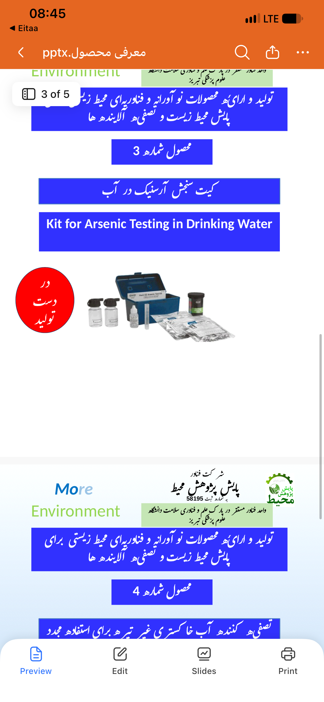

پایش پژوهش محیط
کیت سنجش آرسنیک آب

پایش کیفیت آب
درباره محصول
ابزاری برای سنجش آرسنیک در نمونههای آب و پشتیبانی از برنامههای پایش کیفیت؛ برای انتخاب کیت و دریافت دستورالعمل استفاده با ما تماس بگیرید.
- سنجش آرسنیک در نمونه آب
- پشتیبانی از پایش کیفیت آب
- راهنمای انتخاب و استفاده
برای بررسی نیاز شما
نوع منبع آب، نتایج آزمایش موجود، مقدار مصرف و محل استفاده را هنگام مکاتبه اعلام کنید تا انتخاب محصول متناسب با نیاز شما بررسی شود.